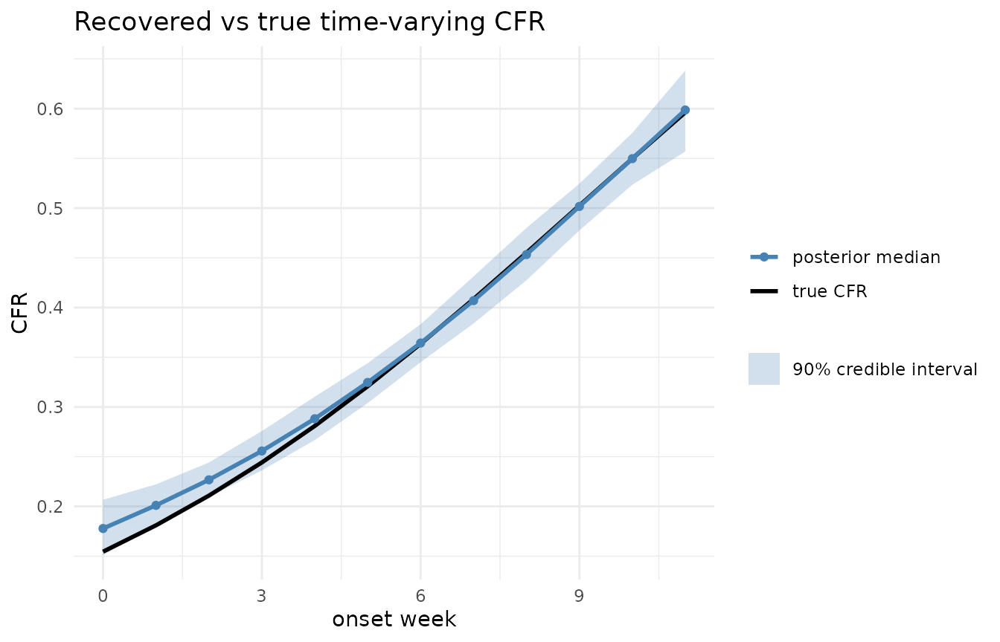

The problem
The naive case fatality ratio, deaths / cases, is biased
downward in real time: recent cases have not yet had time to die.
Restricting to cases with a resolved outcome,
deaths / (deaths + recoveries), swaps that for an upward
bias, because deaths resolve faster than recoveries.
cfrnow sidesteps both by never conditioning on
resolution. Each case is fatal with probability cfr; a
fatal case dies at an interval-censored onset-to-death delay
F; every case still unresolved at the cut-off is
right-censored, contributing the mixture-cure survival term
1 - cfr * F(t). With F fixed this is the
Ghani/Nishiura estimator; here F is co-estimated and its
uncertainty propagated.
cfrnow is registered as an epidist model type, so
cfr and the delay both take brms formulas.
That is how you put covariates, or a smooth time effect, on the CFR.
A line list
Your line list needs an onset_date and a
death_date (NA for cases that have not died);
an optional onset_lower/onset_upper window
widens the onset censoring. Here we simulate one with a known CFR of
0.55 sampled part-way through a growing epidemic.
set.seed(1)
ll <- simulate_linelist(
n = 500, cfr = 0.55, onset_days = 45,
delay = LogNormal(mean = 12.75, sd = 7)
)
head(ll)
#> onset_date death_date
#> 1 2026-01-04 2026-01-09
#> 2 2026-02-08 2026-02-20
#> 3 2026-01-01 <NA>
#> 4 2026-02-03 2026-03-26
#> 5 2026-01-23 <NA>
#> 6 2026-02-12 <NA>Preparing the data at a cut-off
prepare_cfr_data() classifies each case at the
observation cut-off into an observed death, a right-censored survivor,
or (retrospectively) a fully-resolved non-death.
obs_time = NULL gives a retrospective fit where every case
has resolved.
cutoff <- max(ll$onset_date) - 3
d <- prepare_cfr_data(ll, obs_time = cutoff)
#> 35 case(s) with onset after the cut-off excluded
c(cases = d$n_cases, deaths = d$n_deaths, censored = d$n_cens)
#> cases deaths censored
#> 465 181 284
naive <- d$n_deaths / d$n_cases
round(naive, 3) # the downward-biased naive ratio
#> [1] 0.389Fitting
Supply the onset-to-death delay and a
cfr_prior as distspec distributions. A native
delay parameter can be a Normal() prior (co-estimated) or a
fixed number; the cfr_prior is a Beta(), which
matters because the CFR is weakly identified early on.
summary() reports the corrected CFR and the delay moments
(days) with convergence diagnostics.
onset_to_death <- LogNormal(meanlog = Normal(2.41, 0.2), sdlog = Normal(0.51, 0.15))
fit <- fit_cfr(d, delay = onset_to_death, cfr_prior = Beta(6.6, 13.4))
summary(fit)The corrected cfr sits above the naive ratio and, with
enough resolved deaths, covers the true 0.55. summary()
also carries a cfr_low_information attribute,
TRUE when the CFR posterior has barely moved from its
prior, which is expected very early in an outbreak, when the estimate is
prior-driven.
Covariates and time-varying CFR
Because the model is fitted through epidist, a
brms::bf() puts a formula on cfr (or on the
delay location mu). prepare_cfr_data() carries
the onset date through as onset, plus any line-list columns
named in covariates, so those terms are available to the
formula. Here we stratify by a group, building two groups with different
true CFRs and recovering the difference:
grp <- function(n, cfr, label) {
d <- simulate_linelist(n = n, cfr = cfr, delay = LogNormal(mean = 12.75, sd = 7)) |>
prepare_cfr_data(obs_time = NULL) |>
as_epidist_cure_model()
d$group <- label
d
}
grouped <- rbind(
grp(800, 0.2, "low"),
grp(800, 0.6, "high")
) |>
as_epidist_cure_model()
fit <- fit_cfr(grouped,
delay = onset_to_death,
formula = brms::bf(mu ~ 1, cfr ~ group)
)
brms::fixef(fit) # the cfr_grouplow coefficient is negative (low group < high)For a time-varying CFR, derive a time index from the
onset column and put a curve on it. To show that the fit
recovers a real signal, we simulate a line list whose true CFR ramps
logistically from about 0.15 to 0.6 over twelve onset weeks, prepare it
at a cut-off three weeks past the last onset, and fit a natural spline
in the week. A fixed-degree spline (ns(week, df = 3))
enters the CFR as ordinary basis columns, which samples cleanly; a
penalised smooth (s(week)) would fit too, but its
smoothing-variance parameter makes the posterior harder to sample. The
delay is fixed here to isolate the time-varying CFR:
true_cfr <- function(week) plogis(-1.7 + 0.19 * week)
onset_date <- as.Date("2026-01-01") + sample.int(12 * 7, 4000, replace = TRUE) - 1
week <- as.numeric(onset_date - min(onset_date)) %/% 7
fatal <- runif(4000) < true_cfr(week)
death_date <- as.Date(rep(NA, length(onset_date)))
onset_frac <- runif(4000)
death_date[fatal] <- onset_date[fatal] + floor(onset_frac[fatal] + rlnorm(sum(fatal), 2.41, 0.51))
ll_tv <- data.frame(onset_date, death_date)
cure <- prepare_cfr_data(ll_tv, obs_time = max(onset_date) + 21) |>
as_epidist_cure_model()
cure$week <- as.numeric(cure$onset - min(cure$onset)) %/% 7
fit <- fit_cfr(cure,
delay = LogNormal(meanlog = 2.41, sdlog = 0.51),
formula = brms::bf(mu ~ 1, cfr ~ splines::ns(week, df = 3))
)Recovering cfr(week) with
brms::posterior_epred(fit, dpar = "cfr") and plotting its
posterior against the true curve, the spline tracks the ramp closely
and, as expected, widens at the most recent week, where cases are still
largely censored. The fit is precomputed (the vignette builder has no
CmdStan); see data-raw/time_varying_cfr.R for the script
that produces the cached summary read below.

Delay family and fixing the delay
The delay is LogNormal() or Gamma(); they
differ in tail weight, which sets how quickly a recent case counts as
“probably cured”. The family is not identifiable from sparse data, so
check sensitivity by refitting the other. Give a native parameter a
fixed number instead of a Normal() prior to hold it fixed;
fixing the whole delay gives the Ghani/Nishiura estimator.
Recovery timing
If the line list has a recovery_date column and you pass
a recovery_delay, fit_cfr() fits the
two-outcome mixture-cure model that also times recoveries (reported as
recovery_mean/recovery_sd by
summary()); the recovery delay may use a different family
from the death delay.
fit_cfr(d,
delay = onset_to_death,
recovery_delay = LogNormal(meanlog = Normal(2.9, 0.3), sdlog = Normal(0.5, 0.2))
)This sharpens cfr when discharge recording is reliable,
but an actually-recovered case whose recovery is unrecorded
stays censored and is pushed toward the fatal branch over time, biasing
cfr up. So without a recovery_delay,
recoveries are treated as untimed resolutions (the death-only default),
which is safer where discharge data are patchy.